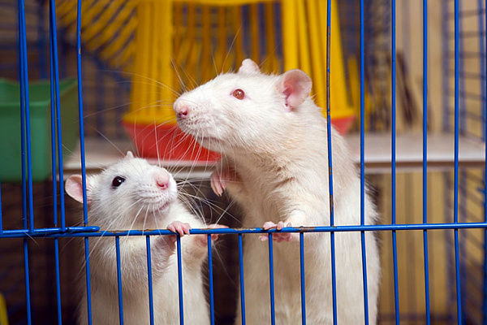

Клетка для грызуна – это настоящий большой мир, который при правильном подходе максимально приближен к естественным условиям обитания.
Да, клетка в любом случае ограничивает пространство, но если модель подобрана правильно, питомец в своем жилище чувствует себя совершенно комфортно.
Немаловажным моментом является и безопасность. Свободное передвижение крысы по квартире может закончиться для нее серьезными травмами, т.к. человеческое
жилище изобилует потенциально опасными для зверька факторами. Словом, клетка для крысы – это предмет первой необходимости.
Однако выбрать подходящую клетку не так легко, как кажется на первый взгляд. Перечислим основные критерии, которые обязательно должны учитываться при покупке.

Особенности клетки для домашних крыс
При выборе важно помнить, что никаким грызунам не подходят контейнеры с гладкими стенами — стеклянными или пластиковыми, как в террариуме.
В таких устройствах воздух застаивается и становится слишком влажным, а подстилка всегда отсыревшая, что приводит к быстрому размножению бактерий.
Содержание в такой клетке может ослабить животное и вызвать развитие ряда заболеваний.
Для декоративных крыс подходят только клетки с решетчатыми стенками, свободно пропускающими воздух.
Расстояние между прутьями не должно превышать 0,7-1 см для маленьких крысят, и 1,2-1,5 см для взрослых особей. Иначе крыса может повредить себе, попытавшись просунуть мордочку в щель.
Металл прутьев должен быть надежно защищен от коррозии, чаще всего используется эмалевая краска или оцинковка.
Проверьте качество покрытия перед покупкой — правильно нанесенная краска не будет отслаиваться.
Острые концы прутьев должны быть прочно приварены и обработаны так, чтобы зверек не зацепился и не поранился.
Предпочтительнее будут разборные и складные конструкции — такую клетку проще транспортировать, а если придется убрать на хранение, она не займет много места.
Поддон лучше выбирать достаточно высокий, не менее 10см. Тогда наполнитель не будет разлетаться при активных играх зверьков.
Деревянные или металлические поддоны выбирать не рекомендуется, — они подвержены негативному воздействию влаги и долго не прослужат.
Металл ржавеет, дерево впитывает запах, а также успешно прогрызается крысами.
Лучше всего подойдет поддон из прочного пластика, который легко моется. При выборе обратите внимание на качество — не должно быть резкого химического запаха, пятен, сколов и трещин.
К оглавлению
Каким должен быть размер клетки
Размеры устройства зависят от нескольких факторов, самый значительный из которых — количество животных. Если вы собираетесь поселить только одного-двух зверьков, будет достаточно размеров поддона 60х40 см.
Если животных несколько, потребуется большая клетка.
Также важен пол зверьков — для содержания мальчиков рекомендуется выбрать горизонтальную модель с широким поддоном, а для девочек лучше взять клетку повыше, так как они легче и подвижнее, и любят лазить.
Достаточно будет клетки высотой 60см с несколькими ярусами.
Чтобы рассчитать, какого размера должна быть клетка для крыс, можно использовать формулу.
Перемножьте между собой значения длины, ширины и высоты в сантиметрах, затем разделите на 100000 — так вы получите число взрослых особей, которых можно поселить в клетке.
Выбор размера конечно зависит и от конкретных условий в квартире. Если у вас нет возможности поставить большую клетку, — стоит задуматься о том, чтобы отложить приобретение зверька.
Небольшая клетка быстро станет мала растущему крысенку, а при нехватке пространства он начнет страдать от малоподвижного образа жизни и сопутствующих заболеваний.
Маленькая клетка также может негативно повлиять на характер зверька, делая его неспокойным и агрессивным.
К оглавлению
Сколько стоит клетка для крысы
Во многом выбор клетки для крыс зависит от суммы, которую вы готовы потратить. Современная зооиндустрия предлагает огромное количество вариантов — от самых простых моделей, до впечатляющих конструкций с полным комплектом внутреннего оборудования.
На стоимость влияет как размер клетки, так и качество материалов изготовления.
Дешевые клетки — такие модели подойдут, если вы непритязательны к дизайну, хотите избежать больших затрат и сумеете самостоятельно собрать все необходимое для питомца.
Недорогие устройства обычно неразборные, имеют простой внешний вид, минимальное количество полок и лестниц, в них отсутствуют поилка и игрушки.
Несмотря на это, вполне можно выбрать большую и удобную клетку, где зверек будет чувствовать себя хорошо. Устройства простой формы также проще убирать.
Если вы хотите разместить несколько клеток в помещении, их легко будет поставить друг на друга.
К оглавлению
Как обустроить клетку для крысы
Условия, в которых содержится животное оказывают большое влияние на его характер, поведение и здоровье.
Поэтому обустройство клетки для крыс — самая важная задача, к которой нужно подойти с ответственностью.
Первым делом нужно позаботиться о наполнителе — хорошо подойдет чистая древесная стружка, прессованный кукурузный наполнитель,
бумага (нельзя использовать газеты из-за типографской краски).
Перечислим, что должно быть в клетке у крысы в обязательном порядке:
Также обязательны полки для установки на разных ярусах — расстояние между ними должно быть не менее 15-20 см, тогда взрослая крыса сможет
встать на задние лапы или прыгнуть без риска получить травму. На каждом этаже закрепляется решетчатая или пластиковая пластина,
которая часто становится любимым местом для лежания и наблюдения за происходящим в комнате.
К оглавлению